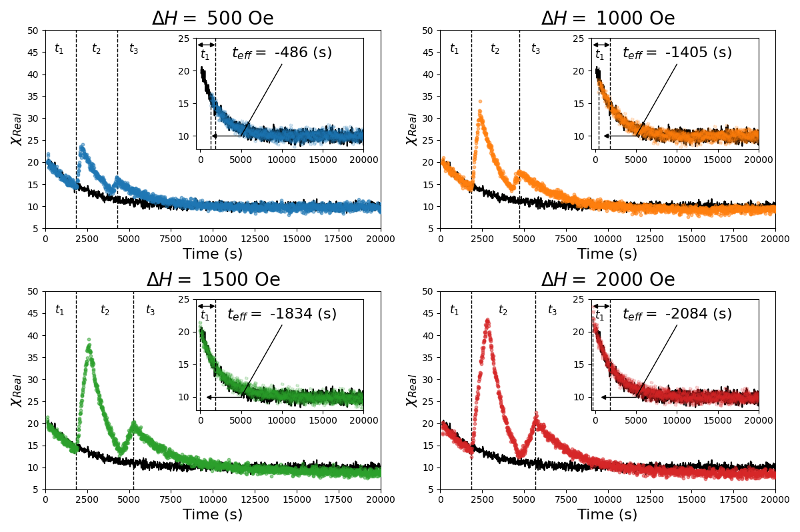

Measurements of a Quantum Spin Glass
In this work, we experimented on Lithium Holmium Tetra-Flouride, a known quantum spin glass at low temperatures and high transverse magnetic fields. This required going to milli-Kelvin temperatures to observe the quantum phase transition to the spin-glass. Multiple experiments were run and resulted in the observation of some novel and very strange quantum effects.
Introduction
Quantum materials are very exciting as they allow us to observe strange macroscopic behaviors that emerge as a result of quantum phenomena such as tunneling and superpositions. These have applications to super conductivity and can be used to for quantum annealing for nonconvex optimization. In this work, we studied a particularly strange phenomenon, Quantum Rejuventation. The premise is simple, albeit strange: when two different magnetic fields are applied to a quantum spin glass, the material seems to "remember" the previous field. This behavior has been observed of classical spin glasses before but quantum spin glasses have only recently been studied.
Results
As with all experiments, after a lot of tinkering with setting up magnetic fields (please never ask me about coil winding), we were able to find a positive result. Suprisingly, the quantum spin glass seems to have specially enhanced memory. In the plot below, we show the appication of two magnetic fields which are interchanged at $t_1$ and then again at $t_2$. Four different "substitute" transverse magnetic fields are shown. To study memory, we shift the curve (which represents the magnetic susceptibility, a property of a material) back until it lines up with the original susceptibility curve during $t_1$. We see that the shift requires a negative time constant relative to $t_2$. For a classical glass this has been observed to be near $0$s. Thus, our quantum spin glass is remembering even earlier times. This has never been observed before and a theoretical explanation of this macroscopic quantum phenomena has not yet been found. Simulations of the quantum spin glass may help us find the theoretical explanation.
LEO Satellite Optimization Connection
As it turns out, quantum annealing (the slow change in magnetic field of a spin array) can be used to solve convex optimization problems. This is the premise of the quantum computing company DWave, whose chief scientist I had the fortune of working for a week with during the project (we discussed a lot about use a quantum annealer to optimize a neural network). This method
was recently explored for the optimization of LEO Satellite partitioning where the quantum speed up for solving the partitioning problem can be observed. I recently presented this to my lab group at CU Boulder as an interesting interesection of my past and current
research.
Astroseminar Presentation Slides
Publications
In progress:
-
Stephen Armstrong, Thomas Clark, Daniel Silevitch, Tom Rosenbaum, and Phillip Stamp
Measurements of a Quantum Spin Glass